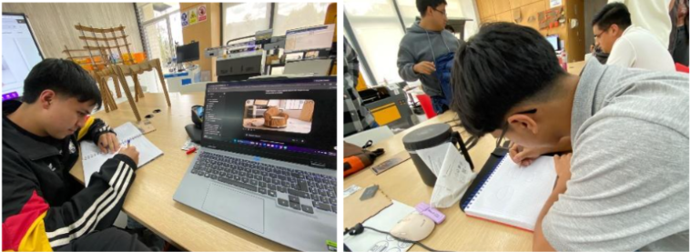
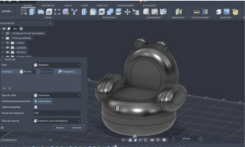
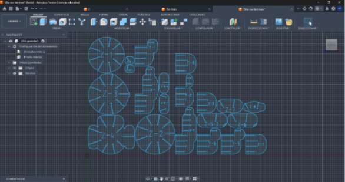
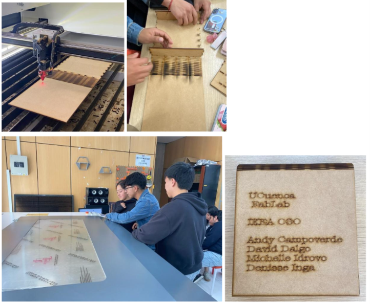
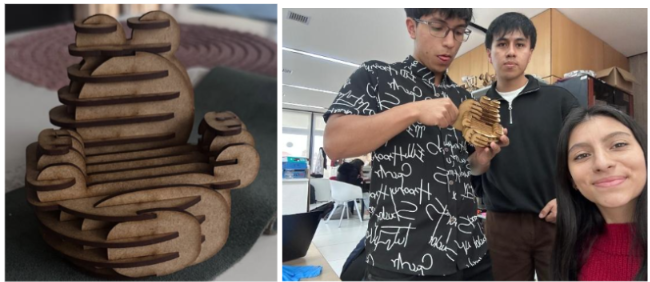

Tema
Diseño y desarrollo de una silla infantil inspirada en la figura de un osito, mediante herramientas de diseño digital y procesos de fabricación asistida por computadora.
DOCUMENTACIÓN · FAB ACADEMY
Diseño y desarrollo de una silla infantil inspirada en la figura de un osito, aplicando el concepto de muebles en paquete plano.
Diseño y desarrollo de una silla infantil inspirada en la figura de un osito, mediante herramientas de diseño digital y procesos de fabricación asistida por computadora.
Diseñar un mueble para niños de 5 años que aplique el concepto de IKEA, utilizando muebles en paquete plano (flat-pack). Los productos se diseñan para desmontarse y empacarse en cajas planas, reduciendo los costos de almacenamiento y transporte.
Esta semana consiste en el diseño y desarrollo de una silla infantil destinada a niños de 5 años. Para la propuesta seleccionamos como inspiración la figura de un osito, buscando combinar una apariencia amigable y atractiva para los niños con una estructura funcional, resistente y adecuada para su uso.
La propuesta se basa en fabricar la silla utilizando planchas de MDF, mediante un proceso de corte digital que permita obtener las diferentes piezas que conformarán el producto. Para su ensamblaje se plantea utilizar un sistema de encastres tomando en cuenta el kerf, mediante el cual las piezas puedan unirse entre sí para formar una estructura estable.
El diseño conceptual constituye la etapa inicial del desarrollo del producto, en la cual se define la idea, la finalidad y las características generales de la silla infantil.
En esta fase se establece la figura del osito como elemento de inspiración, se identifican las necesidades del usuario y los requerimientos que debe cumplir el producto, considerando aspectos como la comodidad al sentarse, la estabilidad estructural, la seguridad durante su utilización y la facilidad de montaje.

Evidencia 1. Diseño conceptual de la silla infantil.
Consiste en elaborar los planos y perfiles de cada componente de la silla, definiendo sus dimensiones, contornos y geometrías. Se representan las piezas que posteriormente serán fabricadas mediante corte digital.
En esta fase se establecen las medidas del asiento, respaldo y soportes, así como las posiciones de las ranuras y aberturas necesarias para el ensamblaje.
Consiste en construir una representación tridimensional del producto, integrando digitalmente sus componentes para visualizar cómo se relacionan entre sí. Permite analizar la forma general de la silla, la distribución de sus elementos y la configuración de su estructura.
Para esta etapa utilizamos el programa Fusion 360. Además, se elaboró el diseño de una caja en la cual se almacenan las piezas de la silla, aplicando el concepto de paquete plano.

Evidencia 2. Modelado 2D y 3D de la silla infantil.
En esta etapa preparamos las piezas planas para el corte láser. Al definir el tamaño de las ranuras, tomamos en cuenta el kerf, que es el grosor del rayo láser que quema y remueve una pequeña cantidad de material al cortar la madera.
Al compensar esta pequeña pérdida de material en el diseño, buscamos que las piezas de MDF encajen correctamente, con la presión adecuada y sin que queden flojas.

Evidencia 3. Diseño de encastres y uniones.
La preparación de archivos consiste en acondicionar los diseños digitales para que puedan ser interpretados correctamente por los equipos de fabricación digital.
En esta etapa se revisan los planos 2D y se verifica que las geometrías estén correctamente definidas, cerradas y organizadas.
Posteriormente, los diseños se exportan en formato DXF, compatible con el software de control de la máquina de corte. En este caso, se utiliza RDWorks para importar el diseño y preparar el proceso de corte láser.
La fabricación comprende la transformación del diseño digital en componentes físicos mediante el uso de equipos de fabricación asistida por computadora.
Para este proyecto se contempla el corte digital de las piezas de MDF, de acuerdo con las geometrías y dimensiones establecidas previamente.

Evidencia 4. Fabricación de las piezas de la silla.
En esta etapa se integran los componentes fabricados para conformar la estructura final de la silla. El montaje se realiza mediante la unión de las pestañas y ranuras previamente diseñadas, verificando que las piezas encajen correctamente y mantengan la geometría establecida en el modelo digital.
Durante el montaje se debe comprobar la correspondencia entre los componentes, la facilidad de inserción de los encastres y la alineación de las uniones.
Equipo de fabricación digital que utiliza un haz láser para realizar cortes sobre láminas de MDF, siguiendo las trayectorias definidas en los archivos digitales. Permite obtener piezas con geometrías específicas, ranuras y pestañas para el sistema de encastres.
Equipo utilizado para desarrollar los diseños bidimensionales y tridimensionales, realizar modificaciones geométricas, preparar los archivos de fabricación y configurar los parámetros de corte.
Instrumento de medición empleado para determinar el espesor del MDF y verificar las dimensiones de las piezas, ranuras y pestañas. Su utilización permite controlar las tolerancias dimensionales de los encastres.
Comprenden elementos como lijas y herramientas auxiliares para facilitar el montaje, ajustar las uniones y mejorar la terminación superficial de los componentes.
Material principal para la fabricación de la silla. Se caracteriza por presentar una superficie homogénea y una estructura uniforme, lo que facilita el corte de perfiles, ranuras y geometrías mediante procesos de fabricación digital.
Software de diseño asistido por computadora (CAD) utilizado para elaborar geometrías bidimensionales y tridimensionales del producto y sus componentes.
Programa utilizado para preparar y gestionar archivos destinados al corte láser, permitiendo organizar las trayectorias de corte y configurar el trabajo de fabricación.
Debido a que el proyecto contempla actividades de diseño digital, manipulación de MDF, corte láser, lijado y ensamble, se deben considerar medidas preventivas específicas para cada etapa del proceso.
Diseño conceptual y documentación: definición de la idea del producto, identificación de las necesidades del usuario infantil, establecimiento de las características funcionales y estéticas de la silla, formulación del objetivo y descripción del proceso de desarrollo.
Modelado 2D y 3D: elaboración de los diseños digitales de los componentes, definición de dimensiones y proporciones, representación tridimensional de la estructura y revisión de la distribución de las piezas.
Diseño de encastres y preparación de archivos: definición de las uniones mediante pestañas y ranuras, consideración de espesores y tolerancias del MDF, revisión de las geometrías y organización de los archivos para el proceso de fabricación digital.
Fabricación, ensamblaje y control de calidad: preparación de los materiales y equipos, participación en el proceso de corte de las piezas, organización de los componentes, ensamblaje de la estructura y verificación de acabados, estabilidad y seguridad. Además, elaboración del manual de ensamble de la silla.
Durante el desarrollo del proyecto de diseño de una silla infantil inspirada en la figura de un osito, se fortalecieron conocimientos relacionados con el diseño de productos, el modelado digital y los procesos de fabricación asistida por computadora.
Esta actividad permitió comprender que la elaboración de un producto no consiste únicamente en definir su apariencia, sino que requiere integrar criterios técnicos, funcionales, ergonómicos y estructurales desde las primeras etapas de desarrollo.
El proyecto permitió comprender de manera integral las etapas que intervienen en el desarrollo de un producto, desde la conceptualización de una necesidad hasta la planificación de su fabricación y ensamblaje.
Asimismo, fortaleció la comprensión de la relación entre diseño digital y fabricación física, destacando la importancia de la precisión técnica, la selección de materiales y la evaluación de las características funcionales y estructurales del producto.
Como resultado del proceso de diseño y desarrollo se presenta la propuesta final de la silla infantil inspirada en un osito, integrando el concepto de muebles en paquete plano y el sistema de ensamblaje mediante encastres.

Evidencia 5. Resultado final de la silla infantil.
Se encuentran disponibles los archivos digitales correspondientes al diseño de la silla infantil y su caja de almacenamiento, elaborados durante el desarrollo del proyecto.
Archivo digital del modelo tridimensional de la silla infantil inspirada en un osito.
silla_oso.stl ↓ Descargar STLArchivo del diseño de la caja destinada al almacenamiento de las piezas de la silla.
caja_silla.dxf ↓ Descargar DXF